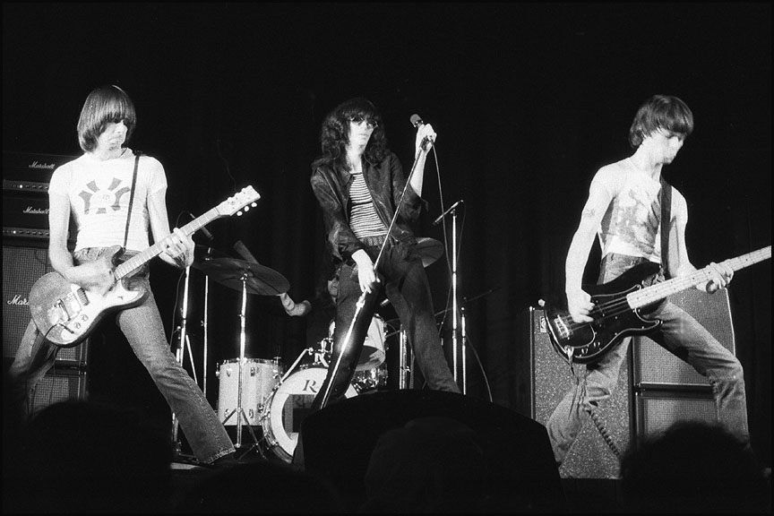

Members: Joey Ramone, Johnny Ramone, Dee Dee Ramone, Tommy Ramone
Source: https://commons.wikimedia.org/wiki/Category:Ramones#/media/File:Ramones_Toronto_1976.jpg
Song List
- 01. Blitzkrieg Bop, 2:15
- 02. Beat on the Brat, 2:32
- 02. Judy Is a Punk, 1:30
- 04. I Wanna be Your Boyfriend, 2:25
- 05. hainsaw, 1:57
- 06. Now I Wanna Sniff Some Glue, 1:36
- 07. I Don’t Wanna Go Down to the Basement, 2:38
- 08. Loudmouth, 2:15
- 09. Havana Affair, 1:57
- 10. Listen to My Heart,1:59
- 11. 53rd & 3rd, 2:22
- 12. Let’s Dance, 1:52
- 13. I Don’t Wanna Walk Around With You, 1:43
- 14. Today Your Love, Tomorrow the World, 2:12
Source = https://live.staticflickr.com/2389/2305142457_5011b60683_b.jpg
Review
Dumb, crude, three-chord thrash? Yes. Fast, exhilarating and brand new? Yes. Intelligent, boundary smashing and woefully underrated? Definitely. The Ramones were all of these things and more. Like a film’s opening credits their first album contains everything that their later career was to offer, and in 1976 nothing else sounded quite like it.
Formed in 1974 by a bunch of middle class kids with a mutual love of the Stooges, New York Dolls and 60s garage bands, they followed bass player Dee Dee’s lead and all adopted the surname Ramone, subsuming their identities beneath the concept and started pairing down their sound into the two minute rushes that we know and love them for today. Shows were understandably brief when they started growing a fanbase at New York’s CBGBs.
Initially reviled by the American press for their seemingly crude approach to rock ‘n’ roll
the barest glance at their lyrics reveals a dark sense of humour and a perfect understanding of
rock’s dynamics. Nazi affiliations (Today Your Love Tomorrow The World
), child abuse (Beat On The Brat
),
drug abuse (Now I Wanna Sniff Some Glue
), the Cuban Missile Crisis? (Havana Affair
); all were fair game in
da brudders alternative universe of nihilism and short sharp fun. But anybody who was looking closely would have
also spotted a softer side. Their love of Phil Spector’s perfect pop, referenced in I Wanna be Your Boyfriend
(interestingly the only song on the album with another instrument apart from guitar and drums — the glockenspiel)
was to later put them in the hands (and allegedly at the end of a gun barrel) of the midget genius on their End Of
The Century album.
Luckily some people did get the joke. In the UK they were first
played not by cool figurehead, John Peel, but by that bastion of prog and metal — Alan Freeman!
Like the Velvets’ first album, not many people did actually buy the album, but nearly all who did
formed a band. For a couple of years they took their formula further and faster and the world resounded
to the cry of one two three four!